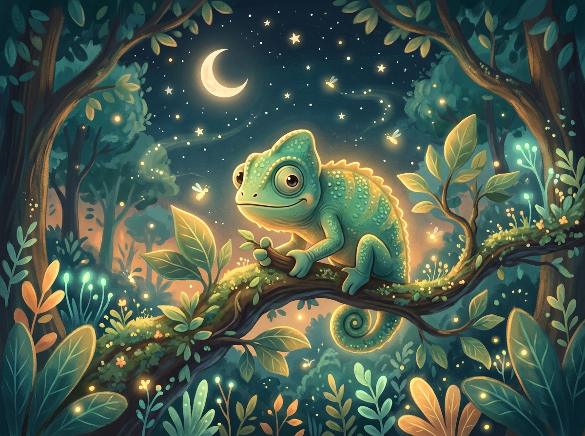

🌙 Storybook Terapêutico & Acolhimento do Medo
O Camaleão Bento e as Cores do Medo do Escuro
Uma história poética e sensível para ajudar crianças a compreenderem que o medo não é um inimigo, mas um guardião que precisa aprender a respirar e se acalmar na hora de dormir.

Cena 1: A Floresta das Folhas Coloridas
No alto de uma amendoeira frondosa vivia o Bento. Bento era um pequeno camaleão de olhos curiosos e cauda enroladinha em espiral. Durante o dia, quando o sol dourava a copa das árvores, Bento era corajoso como uma folha de outono: ficava verde-esperança, depois amarelo-alegria, e pulava de galho em galho conversando com os beija-flores.
Cena 2: O Sol se Despede e o Coração Acelera
Mas quando o céu alaranjado começava a vestir o manto azul-marinho da noite, algo acontecia dentro do peito do Bento. O seu coraçãozinho batia rápido como a asa de uma borboleta: tum-tum-tum-tum. Ele olhava para as sombras das folhas balançando na brisa e pensava: "E se houver um monstro escondido atrás do tronco? Onde foi parar a luz?"
Cena 3: A Mudança de Cor Incontrolável
Por causa do medo, o corpo de Bento mudava de cor sem ele pedir. Ele ficava de um cinza-chumbo bem gelado e encolhia sua cauda o máximo que podia. Bento achava que ter medo era uma coisa feia. "Eu não deveria ter medo! Os outros bichos da floresta já estão dormindo tranquilamente...", ele sussurrava para si mesmo, sentindo uma pontinha de vergonha.
Cena 4: A Visita da Vovó Coruja Olívia
Foi então que um bater suave de asas pousou no galho ao lado. Era Olívia, a coruja mais sábia do bosque. Ela olhou para Bento com seus olhos redondos e ternos:
— Por que está tão cinza e encolhidinho, pequeno Bento?
— Vovó Olívia, eu tenho medo do escuro... Acho que meu corpo está estragado porque meu coração dispara toda noite.
Olívia sorriu com carinho maternal e disse:
— Seu corpo não está estragado, Bento. O medo é como um alarme de passarinho. Ele só quer ter certeza de que você está em segurança. Mas o seu alarme às vezes toca alto demais quando não há perigo algum.
— Por que está tão cinza e encolhidinho, pequeno Bento?
— Vovó Olívia, eu tenho medo do escuro... Acho que meu corpo está estragado porque meu coração dispara toda noite.
Olívia sorriu com carinho maternal e disse:
— Seu corpo não está estragado, Bento. O medo é como um alarme de passarinho. Ele só quer ter certeza de que você está em segurança. Mas o seu alarme às vezes toca alto demais quando não há perigo algum.
Cena 5: A Lanterna Secreta do Peito
Olívia ensinou a Bento um segredo que toda criatura da noite conhece:
— Feche os olhos, Bento. Puxe o ar fresco da noite pelo nariz, contando até quatro: um, dois, três, quatro... Segure um pouquinho e solte bem devagar pela boca, como se soprasse uma folha seca flutuando no riacho.
Bento respirou. Uma vez. Duas vezes. Três vezes.
Aos poucos, o tum-tum acelerado do seu peito foi virando uma cantiga de ninar serena. E, milagre: a cor cinza-chumbo começou a se dissolver. A pele de Bento brilhou em um tom azul-piscina acolhedor e um amarelo-quentinho dourado.
— Feche os olhos, Bento. Puxe o ar fresco da noite pelo nariz, contando até quatro: um, dois, três, quatro... Segure um pouquinho e solte bem devagar pela boca, como se soprasse uma folha seca flutuando no riacho.
Bento respirou. Uma vez. Duas vezes. Três vezes.
Aos poucos, o tum-tum acelerado do seu peito foi virando uma cantiga de ninar serena. E, milagre: a cor cinza-chumbo começou a se dissolver. A pele de Bento brilhou em um tom azul-piscina acolhedor e um amarelo-quentinho dourado.
Cena 6: Os Amigos Luminosos da Noite
Quando Bento abriu os olhos calmos, percebeu o que o medo não deixava ele enxergar: a noite não era vazia! Havia pequenos vaga-lumes dançando como estrelas caídas, a lua prateada velava seu sono com doçura e a floresta inteira respirava em paz. Bento deu um bocejo longo, abraçou o galho seguro e adormeceu sonhando com novas cores.
🌱 Guia de Conversa com a Criança (Para Pais e Terapeutas)
O medo do escuro é uma manifestação universal do neurodesenvolvimento entre os 3 e 8 anos, ligada à imaginação simbólica e à ansiedade de separação. Use estas perguntas para mediar a história com a criança:
1. Validando a Emoção sem Julgamento
"O Bento sentiu vergonha por ter medo do escuro. Você já sentiu medo de alguma coisa e achou que não podia contar para ninguém?"
2. O Alarme do Medo
"A Vovó Olívia explicou que o medo é como um alarme que quer nos proteger. O que acontece com o seu corpo quando o seu alarme toca? (O coração bate rápido? A barriga gela?)"
3. Treino da Respiração Calmante Juntos
"Vamos fazer como o Bento e soprar a folha seca bem devagarinho juntos três vezes agora antes de dormir?"
4. Encontrando a Segurança
"Quem são as pessoas e as luzinhas que cuidam de você e da sua noite enquanto você dorme na sua caminha?"